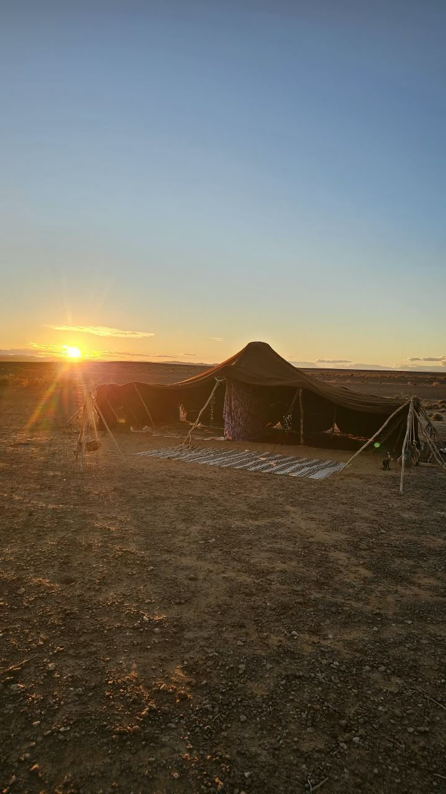
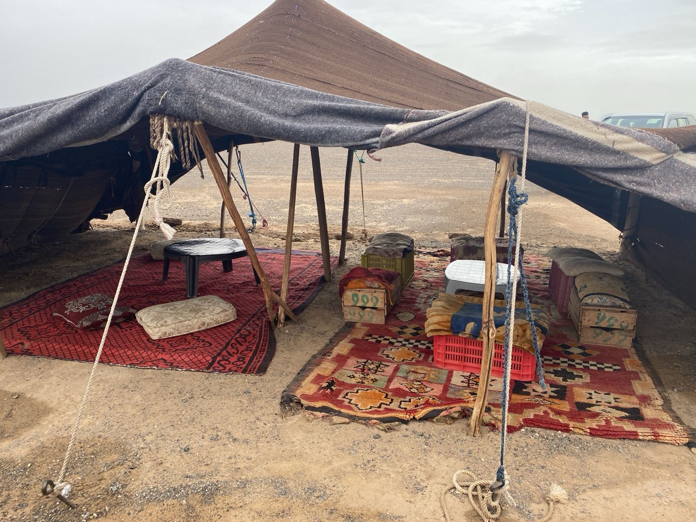
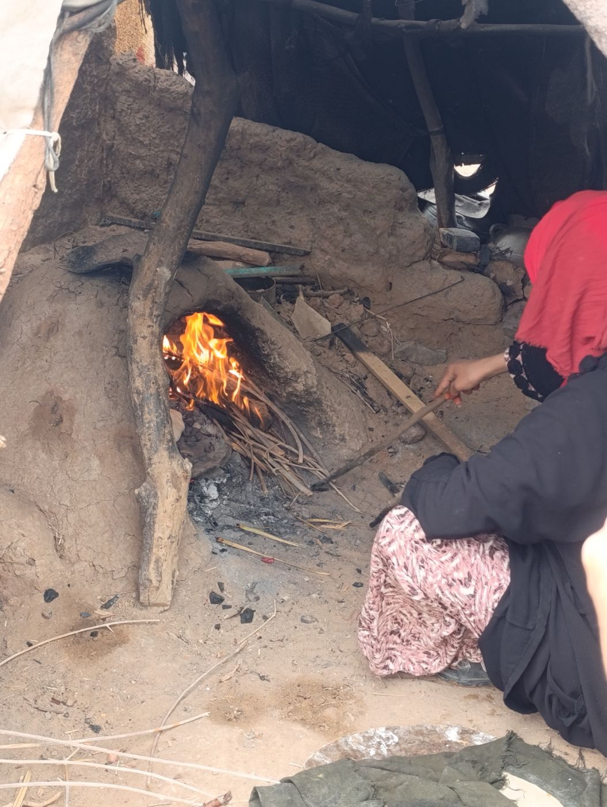
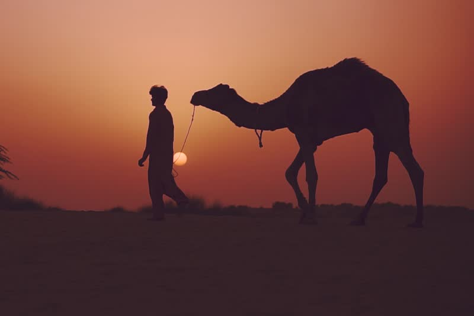
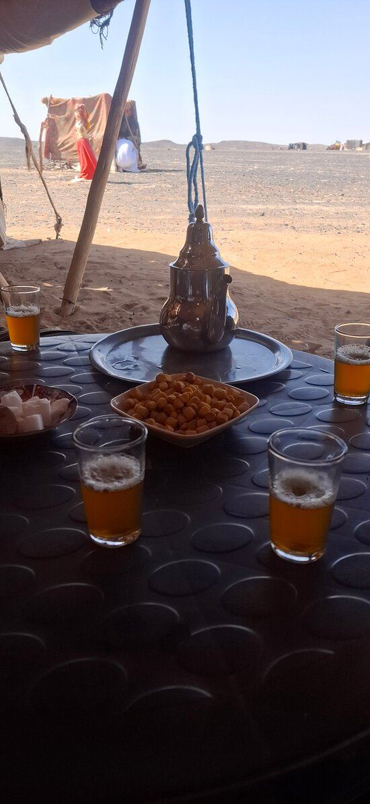

Around the dunes of Erg Chebbi, among the black stones of the hamada, you sometimes see a low brown tent, a few goats and a camel resting in the shade. These are the homes of the last nomad families of the region, Amazigh (Berber) shepherds who still move with their animals in search of water and grazing, as their ancestors did for centuries.
Sharing a glass of tea with a nomad family is one of the simplest and most authentic moments of a trip to the Sahara. There is no show and no stage: just a family, their tent and their hospitality. In this guide we explain who the nomads are, how they live, what a visit looks like and how to make it respectful.

Who are the nomads of Merzouga?
The nomads of the Merzouga region are Amazigh families, many of them from the tribes of the Ait Khebbach and the Ait Atta, who have lived between the oases of the Tafilalet and the desert for centuries. For generations they moved with the seasons, following the rains and the grass, and trading animals, wool and butter with the oasis villages.
Today life is changing. Long droughts, the attraction of the towns and schools for the children mean that many families have settled in villages such as Merzouga, Hassilabied or Khamlia. But some still live in tents all or part of the year, often with relatives in the villages.
The nomad tent
The traditional tent, called khaima, is made of long strips woven from goat and camel hair by the women of the family. The dark fabric gives shade during the day and keeps some warmth at night; the hair swells in the rare rain and lets little water through.
Inside, everything is simple and practical: woven blankets and carpets on the floor, a few cushions, a corner for cooking, the teapot and glasses, water containers and the family’s belongings. Around the tent are a stone pen for the goats, a small fire place and, sometimes, a bread oven dug in the ground.

Daily life in the desert
- The animals: goats, sheep and camels are the wealth of the family. They give milk, meat, wool and hair, and are sold at the markets of Rissani and Erfoud.
- Water: it comes from wells, sometimes far away, and is carried in containers by donkey or by car. Every drop counts.
- Food: bread baked in the sand or in a small clay oven, tea, dates, goat milk, sometimes a tagine. Nothing is wasted.
- The women weave the tent and the carpets, cook, take care of the children and the animals. The men move with the herds, look for grazing and go to the markets.
- The seasons: families move when the grazing runs out, sometimes only a few kilometres, sometimes much further after rain.


What happens during a visit
- Arrival with your guide: we always visit families we know, and our guide asks first if it is a good moment.
- Welcome: you are invited to sit on the carpets in the tent or in the shade beside it.
- Tea: the tea ceremony begins: green tea, fresh mint and sugar, poured from high to make foam. It is usually served three times.
- Bread: sometimes you are offered bread fresh from the sand, with olive oil or butter.
- Conversation: your guide translates. You can ask about the animals, the seasons, the water, the children. The family will often ask you questions too.
- The goodbye: after about 30 to 45 minutes, you thank the family and leave them to their day.
The three glasses of tea
A Saharan saying describes the three glasses: the first is bitter like life, the second is sweet like love, the third is soft like death. Refusing tea is not offensive, but accepting it is the beginning of the welcome.

How to visit respectfully
- Go with a local guide. Don’t arrive alone at a tent: families welcome visitors they know through a guide from the region.
- Ask before taking photos, and accept a no, especially for women and children.
- Bring a useful gift instead of money: a box of tea, a cone of sugar, flour, or school supplies for the children. Your guide can help you buy it in the village. Avoid giving sweets or money directly to children.
- Dress modestly and take your shoes off before stepping on the carpets.
- Be curious, not a tourist at a zoo. The best visits are real conversations between people.
Meet a nomad family with us
We are from this region and we know many families around Erg Chebbi. A visit to a nomad family is part of the day around the dunes on our desert tours, together with Khamlia and its Gnawa music and, depending on availability, a medfouna lunch. See our 3-day desert tour from Marrakech, the 3-day Sahara tour from Fes and our desert experiences.
Frequently asked questions
Are there still nomads in Morocco?
Yes, but fewer every year. Around Merzouga, some Amazigh families still live in tents with their animals all or part of the year, while many have settled in the villages.
Do I need to pay to visit a nomad family?
There is no entrance fee. We recommend bringing a useful gift such as tea, sugar or flour, which your guide can help you buy.
Is it a tourist show?
No. You visit a real family in their home. That is why it is short, simple and always arranged by a guide who knows them.
Can children come?
Yes. Children often play together without needing a common language, and it is a wonderful lesson for young travellers.
What language do nomads speak?
Mostly Tamazight (Berber) and Moroccan Arabic. Your guide translates.
Keep reading: Khamlia and Gnawa music · Things to do in Merzouga · Before your Sahara trip